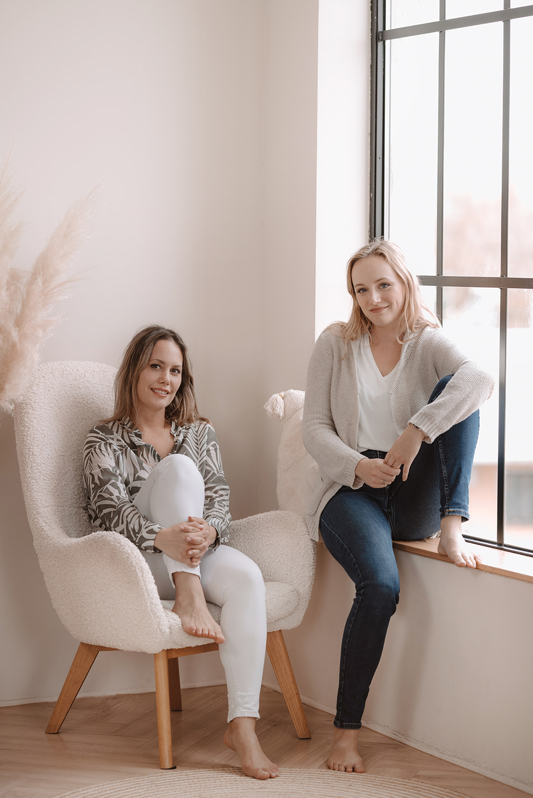

„Évekig a kórházi közegben dolgoztam gyógytornászként. Szerettem, amit csinálok, és sokáig ez tartott lendületben. Aztán egyre kevésbé volt összeegyeztethető a rendszerrel. Falakba ütköztem, és eljutottam oda, hogy szeretnék mást csinálni.”

„Anna ugyanebben az időben a több kisgyerekes év után indult vissza a munkába. Nem kórházban dolgozott, hanem egy liofilizáló üzemben, és szakmailag tovább szeretett volna működni.”
„Mindkettőnk életében egyszerre jött a váltás. Amikor találkoztunk, ebből a közös élethelyzetből és a közös gondolkodásból született meg a vállalkozás ötlete. Együtt vágtunk bele, és az ugrás így már nem tűnt olyan ijesztőnek.”
„Megálmodtunk egy olyan helyet, ahol van idő minden vendéget végighallgatni, ahol egyszerre nem hat-nyolc különböző embert kell kezelni. Ahol jól érzik magukat az emberek, el tudnak lazulni, meg tudnak nyílni. Egy olyan helyet, ahova mi is, mint vendég, szívesen járnánk. Ezt az elvet tartottuk szem előtt a kollégáink kiválasztásánál is.”
„A Mexikói úton továbbra is az egészségmegőrzésre, a mozgásszervi panaszok kezelésére és a megelőzésre fókuszálunk. A Reitter Ferenc utcai központtal pedig hidat építünk az egészség és a sportteljesítmény között: hogy a mozgás ne csak a rehabilitációról, hanem a fejlődésről és az erőről is szóljon.”